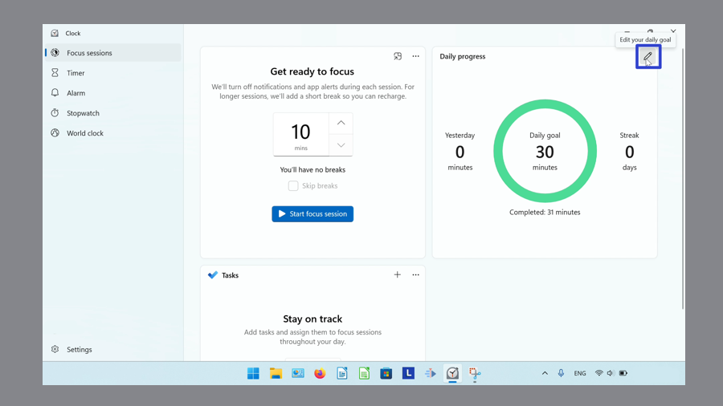
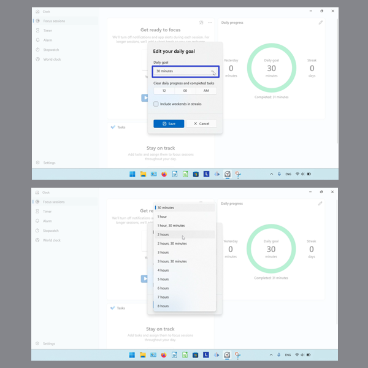
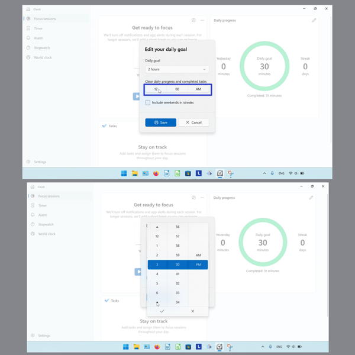
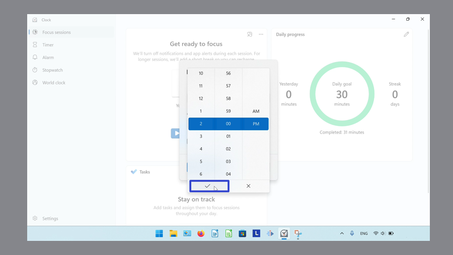
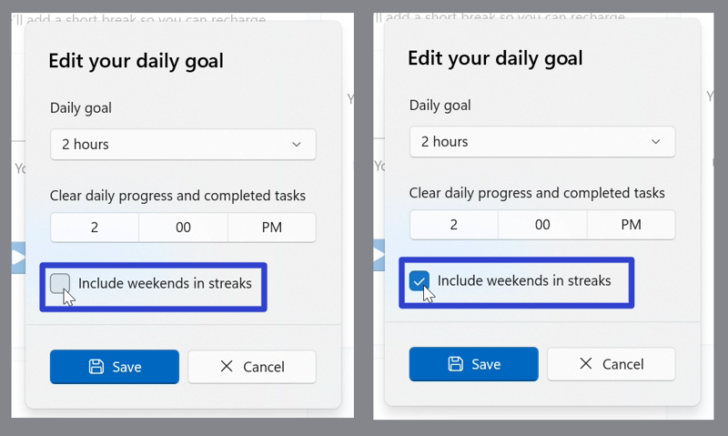
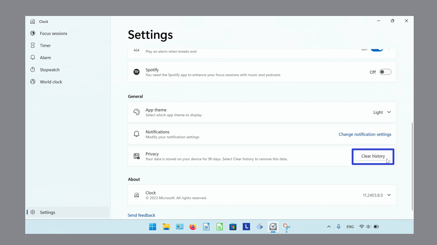

How to Edit the Daily Goal in Microsoft Windows Clock (Windows 11)
This tutorial covers:
How to Edit the Daily Goal
How to Reset the Daily Goal History
No time to scroll down? Click through these tutorial slides:
Watch a video tutorial:
How to Edit the Daily Goal
- Step 1: First switch to Focus Sessions mode. Click the “Edit your daily goal” or pencil button. 
- Step 2: In the window that opens, click the “Daily goal” drop-down menu and click to select the number of minutes. 
- Step 3: Click the “Clear daily progress and completed tasks” button. Then click the arrow buttons, or the specific times, to set the time. 
- Click the check mark button to confirm. To cancel, click the “X” button or anywhere outside the window. 
- Step 4: Click to turn the “Include weekends in streaks” option on or off. 
- Step 5: Click the “Save” button to confirm. Click the “Cancel” button, or click anywhere outside the window, to cancel.

How to Reset the Daily Goal History
Step 1: Open the Windows Clock. In the lower left click the “Settings” or gear button.

- Step 2: Scroll down and on the far right side of the “Privacy” section, click the “Clear history” button. 
Keep a copy of these instructions for later with this free tutorial PDF.